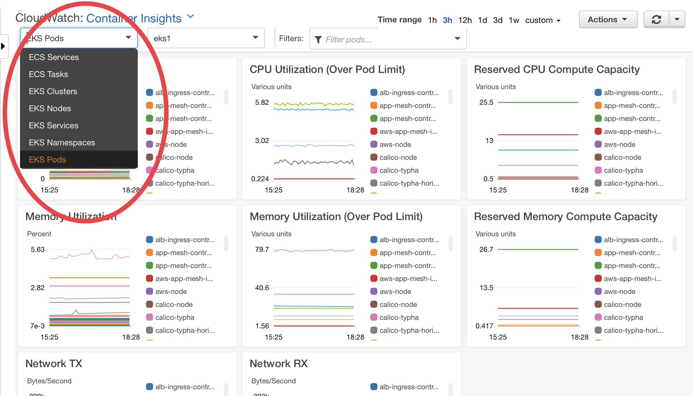

Tutorial: Debug Your Kubernetes Apps
Arun Gupta & Re Alvarez Parmar, Amazon
In this presentation we will learn how to troubleshoot Kubernetes applications.
Agenda slide
EKS Architecture

How to setup a Kubernetes cluster
1. Create Master Nodes (aka the Control Plane)
2. use kubectl to connect to the Control Plane
3. Install Worker nodes
4. Deploy apps and add-ons
5. … profit?
EKS architecture
- AWS Managed Control Plane
- Master nodes
- etcd cluster nodes
- NLB for API load-balancing
- Highly available
- AWS IAM authentication
- VPC networking
EKS core tenets
- Platform for enterprises to run production grade workloads
- Provide a native and upstream experience (CNCF Certified)
- Provide seamless integration with AWS services
- Actively contribute to upstream project
Kubernetes Components
- Master node
- Worker Node
- kubectl (User)
Master node components
- apiserver: exposes APIs for master nodes
- scheduler: decides which pod should run on which worker node
- controller manager: makes changes attempting to move the current state towards the desired state
- etcd: key/value data store used to store cluster state
etcd design
- Minimum 3 etcd servers
- Spread across availability zones
- Uses RAFT protocol
Worker node components
- kubelet: handles communication between worker and master nodes
- kube-proxy: handles communication between pods, nodes, and the outside world
- container runtime: runs containers on the node.
Network considerations
- EKS cluster endpoint can be public or private
- EKS uses aws-vpc-cni
- Worker nodes and Pods get VPC IP
aws-vpc-cni
- Pods recieve an IP address from a VPC subnet
- Max number of pods is limited by EC2 Instance size
- No IP = Pod Pending
- Plan for growth
- customize cni variables
use CNI Metrics Helper

Kubelet resource reservation
Monitor kubelet on the worker node
journalctl -u kubeletUse kube-reserved to reserve resources for kubelet, container runtime & node problem detector
--kube-reserved=[cpu-100m][,][memory=100Mi][,] [ephemeral-storage=1Gi][,][pid=1000]Use system-reserved to reserve resources for system daemons liks sshd, udev, kernel
--system-reserved=[cpu-100m][,][memory=100Mi][,] [ephemeral-storage=1Gi][,][pid=1000]
Coredns scaling
coreDNSMemory required in MB = (Pods + Services)/1000 + 54
Scale CoreDNS pods
kubectl -n kube-system scale --current-replicas=2 --replicas=10 deployment/corednsNode-local DNS addon
- CoreDNS DaemonSet on each node
EKS Architecture

… have you ever ran into this?
$ kubectl get svc
error: the server doesn't have a resource type "svc"
1. Update kubectl & aws-iam-authenticator
2. Update kubeconfig using AWS cli
3. Is cluster endpoint accessible?
Check if cluster is accessible
$ curl -k http://CLUSTER_ENDPOINT/api/v1
response:
"kind": "APIResourceList",
"groupVersion": "v1",
"resources": [
{
"name": "bindings",
"singularName": "",
"namespaced": true,
"kind": "Binding",
"verbs": [
"create"
...
Use AWS CLI to auto-generate kube config file
$ aws eks update-kubeconfig --name {cluster-name}
$ cat ~/.kube/config
apiVersion: v1
clusters:
- cluster:
certificate-authority-data: {REDACTED}
server: https://DFEA886AB17A069545SJDS9F06BCE3DCC.gr7.us-west-2.eks.amazonaws.com
name: arn:aws:eks:us-west-2:09123456789:cluster/eks1
contexts:
- context:
cluster: arn:aws:eks:us-west-2:09123456789:cluster/eks1
user: arn:aws:eks:us-west-2:09123456789:cluster/eks1
name: arn:aws:eks:us-west-2:09123456789:cluster/eks1
current-context: arn:aws:eks:us-west-2:09123456789:cluster/eks1
kind: Config
preferences: {}
users:
- name: arn:aws:eks:us-west-2:09123456789:cluster/eks1
user:
exec:
apiVersion: client.authentication.k8s.io/v1alpha1
args:
- token
- -i
- eks1
command: aws-iam-authenticator
aws-auth config map
$ kubectl -n kube-system describe configmap aws-auth
-----
Name: aws-auth
Namespace: kube-system
Labels: <none>
Annotations: <none>
Data
====
mapRoles:
----
- groups:
- system:bootstrappers
- system:nodes
rolearn: arn:aws:iam::09123456789:role/eksctl-eks-nodegroup-ng
username: system:node:{{EC2PrivateDNSName}}
mapUsers:
----
- userarn: arn:aws:iam::09123456789:user/realvarez
groups:
- system:masters
kubectl works!
$ kubectl cluster-info
-----
Kubernetes master is running at https://xxxx.y.region.eks.amazonaws.com
check cluster status:
$ kubectl get componentstatus
-----
NAME STATUS MESSAGE ERROR
scheduler Healthy ok
controller-manager Healthy ok
etcd-0 Healthy {"health": "true"}
You created a deployment with 8 replicas:
$ kubectl create -f hello-deployment.yaml
deployment.apps/hello created
Or scaled an existing deployment to 8 replicas:
$ kubectl scale --replicas=8 deployment hello deployment.extensions/hello scaled
Deployment shows only 4 replicas are available:
$ kubectl get deployments NAME READY UP-TO-DATE AVAILABLE AGE hello 4⁄8 8 4 23s
get pods shows the same output:
$ kubectl get pods
. . .
=======
NAME READY STATUS RESTARTS AGE
hello-6d4fbd5d76-9xqxg 1/1 Running 0 5s
hello-6d4fbd5d76-brv7k 0/1 Pending 0 5s
hello-6d4fbd5d76-hbf8h 0/1 Pending 0 5s
hello-6d4fbd5d76-jdzlw 1/1 Running 0 5s
hello-6d4fbd5d76-jqsfk 0/1 Pending 0 5s
hello-6d4fbd5d76-k29gb 1/1 Running 0 5s
hello-6d4fbd5d76-vjr62 0/1 Pending 0 5s
hello-6d4fbd5d76-z69pp 1/1 Running 0 5s
Multiple reasons:
- Not enough resources in the cluster
- CPU, memory, port
- Node security group does not have an ingress rule with 443 port access
- Ensure all nodes are healthy
Describe the pod:
$ kubectl describe pod/hello-6d4fbd5d76-brv7k
Shows the output:
. . .
Events:
Type Reason Age From Message
---- ------ ---- ---- -------
Warning FailedScheduling 42s (x2 over 42s) default-scheduler 0/4 nodes are available: 4 Insufficient cpu.
Events are only visible on pods, not on Deployments, ReplicaSet, Job, or any other resource that created pod.
Alternatively, get all events:
$ kubectl get events
LAST SEEN TYPE REASON KIND MESSAGE
2m57s Warning FailedScheduling Pod 0/4 nodes are available: 4 Insufficient cpu.
2m57s Warning FailedScheduling Pod 0/4 nodes are available: 4 Insufficient cpu.
2m57s Warning FailedScheduling Pod 0/4 nodes are available: 4 Insufficient cpu.
2m57s Warning FailedScheduling Pod 0/4 nodes are available: 4 Insufficient cpu.
Or only the warning events:
$ kubectl get events --field-selector type=Warning
Let’s get events only for the pod:
$ kubectl get events --field-selector involvedObject.kind=Pod,involvedObject.name=hello-6d4fbd5d76-brv7k
LAST SEEN TYPE REASON KIND MESSAGE
4m41s Warning FailedScheduling Pod 0/4 nodes are available: 4 Insufficient cpu.
Sort by timestamp:
$ kubectl get events --sort-by='.lastTimestamp'
Check memory/CPU requirements of pod:
$ kubectl describe deployments/hello
Output:
Containers:
hello:
Image: nginx:latest
Port: <none>
Host Port: <none>
Limits:
cpu: 2
memory: 2000Mi
Requests:
cpu: 2
memory: 2000Mi
Environment: <none>
Default CPU request is 200m and none on memory. There are no limits.
1000m (milicores) = 1 core = 1 CPU = 1 AWS vCPU
So, that means:
100m cpu = 0.1 cpu
In this case, CPU request and limits have been specified to 2 and memory to 2GB. So we need 8 blocks of 2 CPU and 2 GB memory.
Check memory/CPU available in cluster:
$ kubectl top nodes
Error from server (ServiceUnavailable): the server is currently unable to handle the request (get nodes.metrics.k8s.io)
Install metrics-server:
$ curl -OL https://github.com/kubernetes-sigs/metrics-server/archive/v0.3.6.tar.gz
<<<<<<< HEAD
$ tar xzvf v0.3.6.tar.gz
=======
tar xzvf v0.3.6.tar.gz
>>>>>>> b4b236b02fdfb0c070be46d1525d19f597d95931
$ kubectl create -f metrics-server-0.3.6/deploy/1.8+/
Get memory/CPU for nodes:
$ kubectl top nodes
NAME CPU(cores) CPU% MEMORY(bytes) MEMORY%
ip-192-168-28-108.us-west-2.compute.internal 28m 0% 410Mi 2%
ip-192-168-48-190.us-west-2.compute.internal 33m 0% 363Mi 2%
ip-192-168-51-148.us-west-2.compute.internal 29m 0% 338Mi 2%
ip-192-168-64-166.us-west-2.compute.internal 32m 0% 395Mi 2%
Get capacity memory for each node:
$ kubectl get no -o json | jq -r '.items | sort_by(.status.capacity.memory)[]|[.metadata.name,.status.capacity.memory]| @tsv'
ip-192-168-28-108.us-west-2.compute.internal 15950552Ki
ip-192-168-48-190.us-west-2.compute.internal 15950552Ki
ip-192-168-51-148.us-west-2.compute.internal 15950552Ki
ip-192-168-64-166.us-west-2.compute.internal 15950552Ki
And allocatable memory:
$ kubectl get no -o json | jq -r '.items | sort_by(.status.allocatable.memory)[]|[.metadata.name,.status.allocatable.memory]| @tsv'
ip-192-168-28-108.us-west-2.compute.internal 15848152Ki
ip-192-168-48-190.us-west-2.compute.internal 15848152Ki
ip-192-168-51-148.us-west-2.compute.internal 15848152Ki
ip-192-168-64-166.us-west-2.compute.internal 15848152Ki
How is allocatable calculated?
[Allocatable] = [Node Capacity] - [Kube-Reserved] - [System-Reserved] - [Hard-Eviction-Threshold]
Explained at https://github.com/kubernetes/community/blob/master/contributors/design-proposals/node/node-allocatable.md.
And do the same for capacity CPU:
$ kubectl get no -o json | jq -r '.items | sort_by(.status.capacity.cpu)[]|[.metadata.name,.status.capacity.cpu]| @tsv'
ip-192-168-28-108.us-west-2.compute.internal 4
ip-192-168-48-190.us-west-2.compute.internal 4
ip-192-168-51-148.us-west-2.compute.internal 4
ip-192-168-64-166.us-west-2.compute.internal 4
And allocatable CPU:
$ kubectl get no -o json | jq -r '.items | sort_by(.status.allocatable.cpu)[]|[.metadata.name,.status.allocatable.cpu]| @tsv'
ip-192-168-28-108.us-west-2.compute.internal 4
ip-192-168-48-190.us-west-2.compute.internal 4
ip-192-168-51-148.us-west-2.compute.internal 4
ip-192-168-64-166.us-west-2.compute.internal 4
So, there is enough memory and CPU. Why the pods are not getting scheduled?
EKS AMI now sets a minimum evictionHard and kubeReserved values: https://github.com/awslabs/amazon-eks-ami/pull/350.
Alternatively, you can set these values using eksctl https://eksctl.io/usage/customizing-the-kubelet/.
Cluster autoscaler serves two purpose:
- Pods fail to run due to insufficient resources
- Recycle nodes that are underutilized for an extended period of time
Let’s install it!
Create IAM policy with autoscaling permissions and attach to the worker node IAM roles.
Create IAM policy:
$ aws iam create-policy --policy-name AmazonEKSAutoscalingPolicy --policy-document file://../../resources/manifests/autoscaling-policy.json
{
"Policy": {
"PolicyName": "AmazonEKSAutoscalingPolicy",
"PolicyId": "ANPARKOFJSCVVWD4MQEKB",
"Arn": "arniam:policy/AmazonEKSAutoscalingPolicy",
. . .
}
}
Attach policy to the IAM role:
$ ROLE_NAME=$(aws iam list-roles \
--query \
'Roles[?contains(RoleName,`debug-k8s-nodegroup`)].RoleName' --output text)
$ aws iam attach-role-policy \
--role-name $ROLE_NAME \
--policy-arn arniam:policy/AmazonEKSAutoscalingPolicy
Setup auto discovery of Auto Scaling Groups by Cluster Autoscaler by attaching tags to the nodegroup:
$ ASG_NAME=$(aws autoscaling describe-auto-scaling-groups \
--query \
'AutoScalingGroups[?contains(AutoScalingGroupName,`debug-k8s-nodegroup`)].AutoScalingGroupName' --output text)
$ aws autoscaling create-or-update-tags \
--tags \
ResourceId=$ASG_NAME,ResourceType=auto-scaling-group,Key=k8s.io/cluster-autoscaler/enabled,Value=something,PropagateAtLaunch=true \
ResourceId=$ASG_NAME,ResourceType=auto-scaling-group,Key=k8s.io/cluster-autoscaler/debug-k8s,Value=something,PropagateAtLaunch=true
Now, create Cluster Autoscaler:
$ CA_FILE=cluster-autoscaler-autodiscover.yaml
$ curl -o ${CA_FILE} https://raw.githubusercontent.com/kubernetes/autoscaler/master/cluster-autoscaler/cloudprovider/aws/examples/cluster-autoscaler-autodiscover.yaml
$ sed -i -e 's/<YOUR CLUSTER NAME>/debug-k8s/' ${CA_FILE}
$ kubectl create -f ${CA_FILE}
Check Cluster Autoscaler logs:
$ kubectl logs -f deployment/cluster-autoscaler -n kube-system
Shows the output:
I1113 0100.754350 1 scale_up.go:263] Pod default/hello-6d4fbd5d76-hbf8h is unschedulable
I1113 0100.754358 1 scale_up.go:263] Pod default/hello-6d4fbd5d76-vjr62 is unschedulable
I1113 0100.754365 1 scale_up.go:263] Pod default/hello-6d4fbd5d76-brv7k is unschedulable
I1113 0100.754371 1 scale_up.go:263] Pod default/hello-6d4fbd5d76-jqsfk is unschedulable
I1113 0100.754407 1 scale_up.go:300] Upcoming 0 nodes
I1113 0100.754416 1 scale_up.go:335] Skipping node group eksctl-debug-k8s-nodegroup-ng-bb0efd30-NodeGroup-H77X21MZFGGH - max size reached
I1113 0100.754426 1 scale_up.go:411] No expansion options
Update Autoscaling Group limits:
$ aws autoscaling update-auto-scaling-group --auto-scaling-group-name $ASG_NAME --max-size 8
Cluster Autoscaler logs are updated:
I1113 0111.009046 1 scale_up.go:263] Pod default/hello-6d4fbd5d76-jqsfk is unschedulable
I1113 0111.009052 1 scale_up.go:263] Pod default/hello-6d4fbd5d76-hbf8h is unschedulable
I1113 0111.009057 1 scale_up.go:263] Pod default/hello-6d4fbd5d76-vjr62 is unschedulable
I1113 0111.009062 1 scale_up.go:263] Pod default/hello-6d4fbd5d76-brv7k is unschedulable
I1113 0111.009098 1 scale_up.go:300] Upcoming 0 nodes
I1113 0111.009322 1 waste.go:57] Expanding Node Group eksctl-debug-k8s-nodegroup-ng-bb0efd30-NodeGroup-H77X21MZFGGH would waste 50.00% CPU, 93.58% Memory, 71.79% Blended
I1113 0111.009346 1 scale_up.go:418] Best option to resize: eksctl-debug-k8s-nodegroup-ng-bb0efd30-NodeGroup-H77X21MZFGGH
I1113 0111.009356 1 scale_up.go:422] Estimated 4 nodes needed in eksctl-debug-k8s-nodegroup-ng-bb0efd30-NodeGroup-H77X21MZFGGH
I1113 0111.009374 1 scale_up.go:501] Final scale-up plan: [{eksctl-debug-k8s-nodegroup-ng-bb0efd30-NodeGroup-H77X21MZFGGH 4->8 (max: 8)}]
Lets check the pods again:
$ kubectl get pods
NAME READY STATUS RESTARTS AGE
hello-6d4fbd5d76-9xqxg 1/1 Running 0 6m30s
hello-6d4fbd5d76-brv7k 1/1 Running 0 6m30s
hello-6d4fbd5d76-hbf8h 1/1 Running 0 6m30s
hello-6d4fbd5d76-jdzlw 1/1 Running 0 6m30s
hello-6d4fbd5d76-jqsfk 1/1 Running 0 6m30s
hello-6d4fbd5d76-k29gb 1/1 Running 0 6m30s
hello-6d4fbd5d76-vjr62 1/1 Running 0 6m30s
hello-6d4fbd5d76-z69pp 1/1 Running 0 6m30s
Another similar use case:
$ kubectl get pods -l app=mnist,type=inference
NAME READY STATUS RESTARTS AGE
mnist-inference-cd78cfd5-hcvfd 0/1 Pending 0 3m48s
Get details about the pod:
$ kubectl describe pod mnist-inference-cd78cfd5-hcvfd
. . .
Events:
Type Reason Age From Message
---- ------ ---- ---- -------
Warning FailedScheduling 3s (x8 over 5m32s) default-scheduler 0/2 nodes are available: 2 Insufficient nvidia.com/gpu.
Need to create a cluster with more GPUs.
Let’s look at a different part of the problem now.
Pods are all scheduled but not able to meet throughput and/or latency needs.
Create horizontal pod autoscaler
Horizontal Pod Autoscaler (HPA) scales the pods in a deployment or replica set. It is implemented as a K8s API resource and a controller. The controller manager queries the resource utilization against the metrics specified in each HorizontalPodAutoscaler definition. It obtains the metrics from either the resource metrics API (for per-pod resource metrics), or the custom metrics API (for all other metrics).
Default HPA loop is 15 seconds (controlled by --horizontal-pod-autoscaler-sync-period)
What about stateful containers?
Pods are ephemeral by nature
Volumes allow pods to persist data
Volumes are accessible to all containers in a pod
Data can persist even after pod termination
PersistentVolume (PV)
pre-provisioned storage in the cluster or dynamically provisioned by storage class
PersistentVolumeClaim (PVC)
request for storage by a user
StorageClass
administrator provided “classes” of storage
What are statefulsets?
- Provide pods with storage to persist data
- Create PVC dynamically using
volumeClaimTemplates - Each pod gets its own dedicated PVC
- Create headless service type (
clusterIP: None) - Ordered deployment and scaling
Step 1. Create storage class
kind: StorageClass
apiVersion: storage.k8s.io/v1
metadata:
name: mysql-gp2
provisioner: kubernetes.io/aws-ebs
parameters:
type: gp2
reclaimPolicy: Delete
mountOptions:
- debug
Step 2. use volumeClaimTemplates in the Statefulset
volumeClaimTemplates:
- metadata:
name: data
spec:
accessModes: ["ReadWriteOnce"]
storageClassName: mysql-gp2
resources:
requests:
storage: 10Gi
mysql statefulsets on Kubernetes
apiVersion: apps/v1
kind: StatefulSet
metadata:
name: mysql
spec:
selector:
matchLabels:
app: mysql
serviceName: mysql
replicas: 3
template:
metadata:
labels:
app: mysql
spec:
initContainers:
...
volumeMounts:
- name: data
mountPath: /var/lib/mysql
subPath: mysql
...
volumeClaimTemplates:
- metadata:
name: data
spec:
accessModes: ["ReadWriteOnce"]
storageClassName: mysql-gp2
resources:
requests:
storage: 10Gi
See full yaml here
Persistent storage options in EKS
EKS + EBS
- Persistent volumes can be dynamically or statically provisioned
- Volumes can be resized and support Snapshots
- Volumes are local to AZ, use EFS where possible
Going public
Options for exposing Kubernetes apps
ServiceType=LoadBalancer. Uses Classic load balancer.
Use Network load balancer, annotate your service:
service.beta.kubernetes.io/aws-load-balancer-type: nlb
Ingress using alb-ingresss-controller
For internal only load balancer, annotate your service:
service.beta.kubernetes.io/aws-load-balancer-internal: 0.0.0.0/0
If load balancer fails to deploy
- Check tags
Check service
kubectl describe serviceCheck EKS IAM Service Role
Troubleshoot latency in app
- Check CloudWatch Metrics for load balancer
Check latency within cluster
kubectl apply -f https://k8s.io/examples/application/shell-demo.yaml kubectl exec -it shell-demo -- /bin/bash root@shell-demo:/# apt-get update root@shell-demo:/# apt-get install curl root@shell-demo:/# curl http://10.100.2.39 <-- IP of the serviceImplement tracing preferably with a Service Mesh
How to find problems?
🎛 Monitoring tools
- Prometheus + Grafana
- CloudWatch Container Insights
- Kubernetes Dashboard
- Commercial solutions (e.g., Datadog, Dynatrace, Sysdig, etc.)
Install Prometheus
$ kubectl create namespace prometheus
$ helm install stable/prometheus \
--name prometheus \
--namespace prometheus \
--set alertmanager.persistentVolume.storageClass="gp2" \
--set server.persistentVolume.storageClass="gp2"
verify Prometheus
$ kubectl -n prometheus get pods
prometheus-alertmanager-58c6876d4c-6p5qs 2/2 Running 0 20s
prometheus-kube-state-metrics-74b57df8bd-jksg8 1/1 Running 0 20s
prometheus-node-exporter-2nvkk 1/1 Running 0 20s
prometheus-node-exporter-fzlts 1/1 Running 0 20s
prometheus-node-exporter-s4nsc 1/1 Running 0 20s
prometheus-pushgateway-c497ff84d-bxm5b 1/1 Running 0 20s
prometheus-server-796c867465-q775s 2/2 Running 0 20s
access Prometheus
$ kubectl port-forward -n prometheus deploy/prometheus-server 8080:9090

Install Grafana
$ kubectl create namespace grafana
$ helm install stable/grafana \
--name grafana \
--namespace grafana \
--set persistence.storageClassName="gp2" \
--set adminPassword='EKS!sAWSome' \
--set datasources."datasources\.yaml".apiVersion=1 \
--set datasources."datasources\.yaml".datasources[0].name=Prometheus \
--set datasources."datasources\.yaml".datasources[0].type=prometheus \
--set datasources."datasources\.yaml".datasources[0].url=http://prometheus-server.prometheus.svc.cluster.local \
--set datasources."datasources\.yaml".datasources[0].access=proxy \
--set datasources."datasources\.yaml".datasources[0].isDefault=true \
--set service.type=LoadBalancer
verify Grafana pods
$ kubectl -n grafana get pods
NAME READY STATUS RESTARTS AGE
pod/grafana-b9697f8b5-t9w4j 1/1 Running 0 2m
Obtain Grafana ELB URL
$ export ELB=$(kubectl get svc \
-n grafana grafana -o jsonpath='{.status.loadBalancer.ingress[0].hostname}')
$ echo "http://$ELB"
Get password for admin user
$ kubectl get secret --namespace grafana grafana \
-o jsonpath="{.data.admin-password}" | base64 --decode ; echo
Community created Dashboard #3131

Community created Dashboard #3146

CloudWatch Container Inights
- Collect, aggregate, and summarize metrics
- Capture logs (uses FluentD)
- Get diagnostic information, such as container restart failures
Cloudwatch Container Insights components
- CloudWatch agent daemonset
FluentD daemonset
$ kubectl get ds -n amazon-cloudwatch NAME DESIRED CURRENT READY UP-TO-DATE AVAILABLE NODE SELECTOR AGE cloudwatch-agent 3 3 3 3 3 <none> 21h fluentd-cloudwatch 3 3 3 3 3 <none> 21h
CloudWatch Container Insights Dashboard


Container monitoring options
- Readiness probe
- Liveness probe
- Tracing (OpenTracing, AWS X-ray)
- Process health
- Process metrics
- Process logs
Thank you!